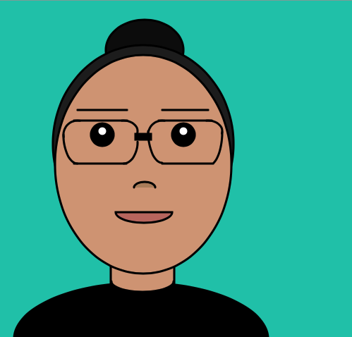

In Code as Art, our class used p5.js, a JavaScript library that starts
with the original goal of Processing-to make coding accessible for artists,
designers, educators, and beginners-and reinterprets this for today's web.
The class used this tool to create a self portrait, diy drawing tool, and
our own game.
Self-Portrait
I used code to create a self-portait of myself in P5js.
DIY Photoshop
I created a drawing tool that expresses popular culture. The tool is to
create your own comic with some of the most popular superhero characters today.
Make a Game
The primary colors are red, yellow, and blue. The white ball acts like a
paintbrush. You chase it around as if you were mixing all the colors. The
flashing background in the end is the color back, and it is the result of
mixing red, yellow, and blue.
Self-Portrait
DIY Photoshop
Make a Game